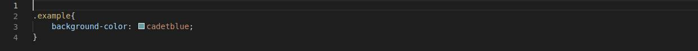

Отличия блочной вёрстки от табличной
Если табличная вёрстка подразумевает, что содержимое страницы находятся внутри тега table или td, то концепция блочной вёрстки основана на активном использовании универсальных тегов div, внутрь которых помещается содержимое, включая другие теги.
Блочная вёрстка лишена недостатков табличной — поисковыми системами она индексируется лучше, её код не такой развесистый, да и блоки, которые так любят называть «слоями», изначально задумывались универсальными, то есть «для всего», тогда как — это таблица, которую нужно использовать для отображения табличных данных и не более того.
Суть блочной вёрстки
В графическом редакторе создаётся макет сайта: размечается, где какая область страницы (шапка, низ, боковая панель, основной контент) будет находиться и сколько места занимать, готовятся картинки, фоны.
Каждая часть страницы помещается в свой блок: верх сайта — в первый, меню — во второй, контент — в третий и т. д. Каждый блок наполняется содержимым средствами HTML, а также позиционируется и оформляется с помощью CSS-разметки.
Конечный HTML-документ представляет собой набор блоков с контентом внутри.
Блоки — они повсюду!
Первое, что нужно понять для эффективного использования CSS, — всё, что вы видите на странице, состоит из прямоугольников. Каждый сайт представляет собой ничего более, чем набор прямоугольных блоков, расположенных рядом, сверху, снизу и внутри друг друга.
Заголовок? Прямоугольник. Боковая панель? Прямоугольник. Изображение? Тоже прямоугольник. Само собой, обычно мы называем их не прямоугольниками, а HTML-элементами, которые бывают разных типов.
Строчные и блочные элементы
Есть два типа HTML-элементов: строчные и блочные. Между ними есть разительные отличия, которые также влияют на использование блочной модели CSS.
Одной из особенностей блочных элементов является то, что они занимают всю площадь контейнера, в котором находятся. Если вы не указали иное с помощью CSS, они растягиваются, чтобы занять максимум доступного места, сдвигая другие элементы под ними.
Кроме того, блочные элементы могут содержать другие блочные или строчные элементы и автоматически регулируют свою высоту, чтобы уместить своё содержимое. В их число входят заголовки, контейнеры, списки и другие элементы.
В отличие от блочных, строчные элементы занимают по горизонтали столько места, сколько им необходимо. Также они не сдвигают на новую строку и под себя другие элементы.
- Подробнее можно почитать тут:
- Блочные и строчные элементы
- Блочные и строчные элементы
Так что это за блочная модель?
Возможно, вы об этом не знаете, но у каждого HTML-элемента есть блок, который его окружает. Этот блок состоит из нескольких слоёв, которыми можно независимо управлять с помощью CSS. Это позволяет разместить элементы относительно друг друга и оформить их разными способами.
- Вот из чего состоят слои:
- Ширина (width) — ширина площади содержимого элемента. Для блочных элементов значение по умолчанию равно 100%. У строчных элементов ширина зависит от содержимого.
- Высота (height) — определяет высоту элемента. Как правило, она зависит от внутреннего содержимого, но при желании можно указать конкретную высоту. Опять же, это работает только с блочными элементами.
- Границы (border) — границы есть у каждого элемента, даже если вы их не видите. У них может быть разный размер, цвет и оформление.
- Отступы (padding) — они определяют расстояние между границей элемента и его содержимым. Их можно использовать, например, для того, чтобы текст внутри элемента оставался читаемым.
- Поля (margin) — они определяют расстояние между границей элемента и тем, что его окружает.
Примеры использования блочной модели
Создадим простую страницу с блочным элементом:
HTML CSS  Browser resultИзменяем ширину
Первое, что мы сделаем, — определим ширину. Как было упомянуто ранее, сейчас её значение равно 100%. Чтобы изменить его, нам нужно взаимодействовать со свойством width.
Для него можно установить разные значения. Мы можем использовать фиксированную ширину вроде пикселей или пропорциональное значение вроде процентов. Последний вариант особенно важен для штук вроде адаптивного дизайна. Однако для простоты обойдёмся пикселями.
CSS Browser resultПродолжим изменять елемент
Увеличиваем высоту элемента height: 300px;
Теперь изменим границы. Как упоминалось, границы уже есть, просто мы их не видим. Изменим это с помощью свойства border: 15px solid blue;.
Также обратите внимание, что для разных сторон можно установить разные типы границ с помощью свойств border-top, border-right, border-bottom и border-left.
Одна из проблем, которая выделяется при взгляде на наш пример, заключается в том, что текст начинается прямо с границы элемента. Из-за этого его сложно читать, да и выглядит не очень приятно. К счастью, свойство padding позволяет это исправить padding: 16px;
Так же, как и с границами, можно настроить отступы отдельно для каждой стороны элемента. Для этого используются свойства padding-top, padding-right, padding-bottom и padding-left. Можно не прописывать отдельно все эти свойства, а описать все отступы одной строкой вроде padding: 10px 5px 15px 10px (порядок: сверху по часовой стрелке).
Добавляем поля - расстояние между элементами. Добавим margin: 25px; в стили.
Однако для разных сторон можно установить свои значения. Это работает так же, как и с отступами: margin-top, margin-left и т. д или однострочное сокращение.
Результат:
CSS Browser resultНемного о размерах элементов
Когда речь заходит о размерах элементов, стоит принять во внимание, что учитываются все части блочной модели. Например, если вы установили ширину равной 200 px, это значение считается только для области с содержимым.
Есть способы обхода такого поведения вроде установки свойства элемента box-sizing: border-box. В этом случае ширина будет включать в себя границы и всё содержимое подстроит свои размеры, чтобы уместиться в этих рамках.